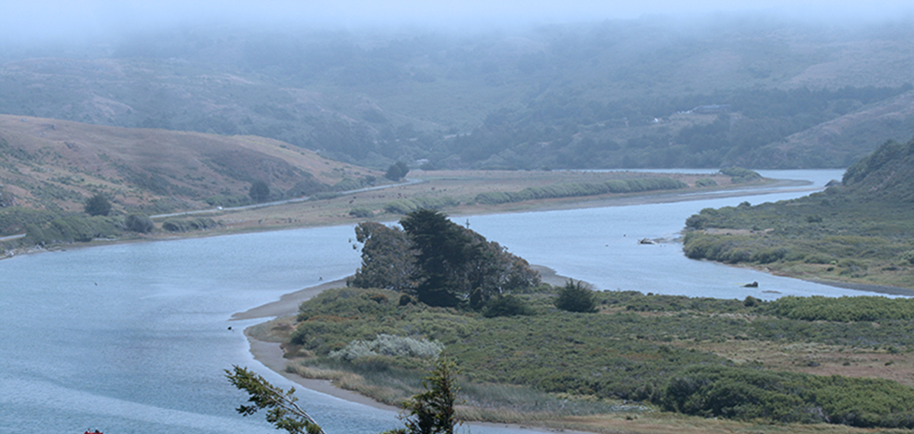

Publications | Research
Reviewed, Reports, Books
Reviewed
ORCid | Scholar-
<<<<<<< Updated upstream
Cicero C, Koo MS, Braker E, Abbott J, Bloom D, Campbell M, Cook JC, Demboski JR, Doll AC, Frederick LM, Linn AJ, Mayfield-Meyer T, McDonald DL, Nachman M, Olson LE, Roberts D, Sikes DS, Witt CC, Wommack EA. (2024) Arctos: Community-driven innovations for managing natural and cultural history collections. PLoS ONE 19(5): e0296478. https://doi.org/10.1371/journal.pone.0296478
Lavelle A, Lasala JA, Mackset MC, Koo MS and Spencer CL. 2023. Anthropogenic effects on Loggerhead TurtLe nest success and predation in the Gulf of Mexico. Herpetological Conservation and Biology. 18(3):450-463. LINK
Nachman MW, Beckman EJ, Bowie RC, Cicero C, Conroy CJ, Dudley R, Hayes TR, Koo MS, et al. 2023. Specimen collection is essential for modern science.
PLoS Biology 21(11): e3002318. DOI LINKJohnson, KR, Owens IFP, and the Global Collections Group. 2023. A Global Approach to Natural History Museums: Integration of the world’s natural history collections can provide a resource for decision-makers. Science. 379(6638): DOI LINK
Cicero C, N Mason, Z Oong, PO Title, ME Morales, KA Feldheim, MS Koo, and RCK Bowie. 2022. Deep ecomorphological and genetic divergence in Steller’s Jays (Cyanocitta stelleri, Aves: Corvidae). Ecology and Evolution 12: e9517. DOI LINK
Womack MC, E Steigerwald, DC Blackburn, DC Cannatella, A Catenazzi, J Che, MS Koo, JA McGuire, S Ron, C Spencer, VT Vredenburg, RD Tarvin. 2022. State of Amphibia 2020: Five Years of Amphibian Research, Diversity and Resources. Ichthyology & Herpetology, 110(4):638-661 (2022). DOI LINK
Balk MA, Deck J, Emery KF, Walls RL, Reuter D, LaFrance R, Arroyo-Cabrales J, Barrett P, Blois J, Boileau A, Brenskelle L, Cannarozzi NR, Cruz JA, Dávalos LM, de la Sancha NU, Gyawali P, Hantak MM, Hopkins S, Kohli B, King JN, Koo MS, Lawing AM, Machado H, McCrane SM, McLean B, Morgan ME, Pilaar Birch S, Reed D, Reitz EJ, Sewnath N, Upham NS, Villaseñor A, Yohe L, Davis EB, Guralnick RP. 2022. A solution to the challenges of interdisciplinary aggregation and use of specimen-level trait data ISCIENCE doi: DOI LINK
=======Cicero C*, MS Koo*, E Braker*, J Abbott, D Bloom, M Campbell, JA Cook, JR Demboski, AC Doll, LM Frederick, AJ Linn, TJ Mayfield-Meyer, DL McDonald, MW Nachman, LE Olson, DA Roberts, DS Sikes, CC Witt, and EA Wommack. 2024. Arctos: Community-driven innovations for managing natural and cultural history collections. PLoS ONE 19: e0296478. doi: 10.1371/journal.pone.0296478 *first authors
Belasen, AM, Peek R, Adams A, Russell I, De León M, Adams M, Bettaso J, Breedveld K, Catenazzi A, Dillingham C, Grear D, Halstead B, Johnso P, Kleeman P, Koo M, Koppl C, Lauder J, Padgett-Flohr G, Piovia-Scott J, Pope K, Westphal M, Vredenburg VT, Wiseman K, Kupferberg S. 2024. Chytrid infections exhibit historical spread and contemporary seasonality in a declining stream-breeding frog. R. Soc. Open Sci. 11: 231270. doi: 10.1098/rsos.231270
Ghose SL, Yap TA, Byrne AQ, Sulaeman H, Rosenblum EB, Chan-Alvarado A, Chaukulkar S, Greenbaum E, Koo MS, Kouete MT, Lutz K, McAloose D, Moyer AJ, Parra E, Portik DM, Rockney H, Zink AG, Blackburn DC and Vredenburg VT. 2023. Continent-wide recent emergence of a global pathogen in African amphibians. Front. Conserv. Sci. 4:1069490. doi: 10.3389/fcosc.2023.1069490
Womack MC, E Steigerwald, DC Blackburn, DC Cannatella, A Catenazzi, J Che, M. Koo, JA McGuire, S Ron, C Spencer, VT Vredenburg, RD Tarvin. 2022. State of Amphibia 2020: Five Years of Amphibian Research, Diversity and Resources. Ichthyology & Herpetology, 110(4):638-661 (2022). dio: 10.1643/h2022005
Balk MA, Deck J, Emery KF, Walls RL, Reuter D, LaFrance R, Arroyo-Cabrales J, Barrett P, Blois J, Boileau A, Brenskelle L, Cannarozzi NR, Cruz JA, Dávalos LM, de la Sancha NU, Gyawali P, Hantak MM, Hopkins S, Kohli B, King JN, Koo MS, Lawing AM, Machado H, McCrane SM, McLean B, Morgan ME, Pilaar Birch S, Reed D, Reitz EJ, Sewnath N, Upham NS, Villaseñor A, Yohe L, Davis EB, Guralnick RP. 2022. A solution to the challenges of interdisciplinary aggregation and use of specimen-level trait data ISCIENCE doi: https://doi.org/10.1016/j.isci.2022.105101
>>>>>>> Stashed changesPoo S, Whitfield SM, Shepack A, Watkins-Colwell GJ, Nelson G, Goodwin J, Bogisich A, Brennan PLR, D'Agostino J, Koo MS, Mendelson III JR, Snyder R, Wilson S, Aronsen GP, Bentley AC, Blackburn DC, Borths MR, Campbell ML, Conde DA, Cook JA, Daza JD, Dembiec DP, Dunnum JL, Early CM, Ferguson AW, Greene A, Guralnick R, Janney C, Johnson D, Knightly F, Poulin S, Rocha L, Soltis PS, Thiers B, and Chakrabarty P. 2022. Bridging the Research Gap between Live Collections in Zoos and Preserved Collections in Natural History Museums. BioScience. biab022, https://doi.org/10.1093/biosci/biac022
Cowgill M, Zink AG, Sparagon W, Yap T, Sulaeman H, Koo MS, Vredenburg VT. 2021. Social behavior, community composition, pathogen strain and host symbionts influence fungal disease dynamics in salamanders. Front. Vet. Sci. https://doi.org/10.3389/fvets.2021.742288
Koo MS, Vredenburg VT, Deck JB, Olson DH, Ronnenberg KL, Wake DB. 2021. Tracking, Synthesizing, and Sharing Global Batrachochytrium Data at AmphibianDisease.org. Frontiers. Collection. https://doi.org/10.3389/fvets.2021.728232
Or see
Figshare repository with Supplemental Material
Uetz P, Koo MS, Aguilar R, Brings E, Catenazzi A, Chang AT, Chaitanya R, Freed P, Gross J, Hammermann M, Hosek J, Lambert M, Sergi Z, Spencer CL, Summers K, Tarvin R, Vredenburg VT, Wake DB. 2021. A Quarter Century of Reptile and Amphibian Databases. Herpetological Review 52(2):246-255. [PDF]
Vredenburg VT, SVG McNally, H Sulaeman, HM Butler, T Yap, MS Koo, DS Schmeller, C Dodge, T Cheng, G Lau, and CJ Briggs. 2019. Pathogen invasion history elucidates contemporary host pathogen dynamics. PLOS ONE 14(9): e0219981
Hiller, AE, MS Koo, KR Goodman, KL Shaw, PM O’Grady, RG Gillespie. 2019. Niche conservatism predominates in adaptive radiation: comparing the diversification of Hawaiian arthropods using ecological niche modelling. Biological Journal of the Linnean Society, 127(2):479–492. https://doi.org/10.1093/biolinnean/blz023
González-del-Pliego, P, RP Freckleton, DP Edwards, MS Koo, BR Scheffers, R. Alexander Pyron, and W Jetz. 2019. Phylogenetic and Trait-Based Prediction of Extinction Risk for Data-Deficient Amphibians. Current Biology,29(9):1557-1563.e3, https://doi.org/10.1016/j.cub.2019.04.005.
Wiseman, KD, HW Greene, MS Koo, and DJ Long. 2019. Feeding ecology of a generalist predator, The California KingsnaKe (Lampropeltis californiae): Why rare prey matter. Herpetological Conservation and Biology 14(1):1-30. http://www.herpconbio.org/Volume_14/Issue_1/Wiseman_etal_2019.pdf
Wake, DB and MS Koo. 2018. Amphibians-Primer. Current Biology 28(11):R1237-R1241 https://doi.org/10.1016/j.cub.2018.09.028.
Karin BR, C Cicero, MS Koo, and RCK Bowie. 2018. The role of history and ecology as drivers of song divergence in Bell’s and Sagebrush sparrows (Artemisiospiza, Aves: Passerellidae). Biological Journal of the Linnean Society. Early Online
Yap, TA, MS Koo, RF Ambrose, and VT Vredenburg. 2018. Introduced Bullfrog Facilitates Pathogen Invasion in the Western United States. PLOS ONE 13 (4): e0188384.
Hiller, A. E., C. Cicero, M. J. Albe, T. L. W. Barclay, C. L. Spencer, M. S. Koo, R. C. K. Bowie, and E. A. Lacey. 2017. Mutualism in museums: A model for engaging undergraduates in biodiversity science. PLOS Biology. 15(11):e2003318
Kelly, M, K J Easterday, MS Koo, J H Thorne, S Mukythar, and B Galey. 2017. Geospatial informatics key to recovering and sharing historical ecological data for modern use. Photogrammetric Engineering and Remote Sensing 18(11): 779-786 doi: 10.14358/PERS.83.10.779 (PDF)
Kelly, M, K Easterday, G Rapacciuolo, MS. Koo, P Mcintyre, and J Thorne. 2016. Rescuing and sharing historical vegetation data for ecological analysis: The California Vegetation Type Mapping project. Biodiversity Informatics 11: 40-62.
Yap, T, L Gillespie, S Ellison, SV Flechas, MS Koo, AE Martinez, and VT Vredenburg. 2016. Invasion of the fungal pathogen Batrachochytrium dendrobatidis on California Islands. EcoHealth 13(1):145-150. DOI:10.1007/s10393-015-1071-y
Yap TA, MS Koo, RF Ambrose, DB Wake, and VT Vredenburg. 2015. Averting a North American biodiversity crisis. Science 349 (6247), 481-482. DOI:10.1126/science.aab1052
Rowe, K.C., K.BC Rowe, M.W. Tingley, M.S. Koo, J.L. Patton, C.J. Conroy, S. Beissinger, and C. Moritz. 2015. Spatially heterogeneous impact of climate change on small mammals of montane California. Proceedings of the Royal Society B: Biological Sciences 282(1799): 20141857.
Davies, N., et al. 2014. Founding Charter of the Genomic Observatories Network. GigaScience 2014, 3:2 doi:10.1186/2047-217X-3-2
Reilly, S.B., D. Portik, M.S. Koo, D.B. Wake. 2013. Discovery of a New, Disjunct Population of a Narrowly Distributed Salamander (Taricha rivularis) in California Presents Conservation Challenges. Journal of Herpetology. Early Online: December 18, 2013; September 2014: 48(3):371-379.
Smith, A.B., M.J. Santos, M.S. Koo, K.M.C. Rowe, K.C. Rowe, J.L. Patton, J.D. Perrine, S.R. Beissinger, C. Moritz. 2013. Evaluation of species distribution models by resampling of sites surveyed a century ago by Joseph Grinnell. Ecography. 36(9):1017-1031. doi: 10.1111/j.1600-0587.2013.00107.x
Tingley, M., M.S. Koo, C. Moritz, A.C. Rush, S. Beissinger. 2012. The push and pull of climate change causes heterogeneous shifts in avian elevational ranges. Global Change Biology 18(11):3279-3290.
Cicero, C. and M.S. Koo 2012. The role of niche divergence and phenotypic adaptation in promoting lineage diversification of the Sage Sparrow (Artemisiospiza belli, Aves: Emberizidae). Biological Journal of the Linnean Society 107(2):332-354.
Leaché, A.D., M.S. Koo, C.L. Spencer, T.J. Papenfuss, R.N. Fisher and J.A. McGuire. 2009. Quantifying ecological, morphological, and genetic variation to delimit species in the coast horned lizard species complex (Phrynosoma). Proceedings of the National Academy of Sciences 28 July 2009. 106(30): 12418-12423.
Davis, E. B., M.S. Koo, C. Conroy, J.L. Patton, C. Moritz. 2008. The California Hotspots Project: Identifying regions of rapid diversification of mammals. Molecular Ecology. 17(1):120-138. doi:10.1111/j.1365-294X.2007.03469.x
Wogan, G.O.U., J.V. Vindum, J.A. Wilkinson, M.S. Koo, J.B. Slowinski, Htun Win, Thin Thin, Sai Wunna Kyi, San Lwin Oo, Kyi Sow Lwin, and Awan Khwi Shein. 2008. New country records and range extensions for Myanmar amphibians and reptiles. Hamadryad. 33(1):83-96.
Fellers, G.M., K.L. Pope, J.E. Stead, M.S. Koo, H.H. Welsh, Jr. 2007. Turning population trend monitoring into active conservation: Can we save the Cascades frog (Rana cascadae) in the Lassen region of California? Herpetological Conservation and Biology 3(1):28-39.
McGuire, J.A., C.W. Linkem, M.S. Koo, D.W. Hutchison, A.K. Lappin, D.I. Orange, J. Lemos-Espinal, B.R. Riddle, J.R. Jaeger. 2007. Mitochondrial introgression and incomplete lineage sorting through space and time: phylogenetics of crotaphytid lizards. Evolution 61 (12): 2879–2897.
Zug, G.R., J.V. Vindum, M.S. Koo. 2007. Burmese Hemidactylus (Reptilia, Squamata, Gekkonidae): Taxonomic Notes on Tropical Asian Hemidactylus. Proceedings of the California Academy of Sciences 58: 387 - 405.
Pawar, S., M.S. Koo, C. Kelly, M.F. Ahmed, S. Choudhury, S. Sarkar. 2007. Conservation assessment and prioritization of areas in Northeast India: Priorities for amphibians and reptiles. Biological Conservation. 136: 346 - 361.
Technical Reports
See more about CAS Herp Surveys
10. Parham, J.F., M.S. Koo, W. Brian Simison, A. Perkins, T.J. Papenfuss and E.N. Tennant. 2019 Conservation Assessment of the California Legless Lizard (Anniella). California Dept Fish & Wildlife Agreement # F15AF00458 (G1598091). 30 pp.
9. Smith, A.B., M.S. Koo, K.C. Rowe, J. Patton, S. Beissinger, and C. Moritz 2011. Testing methods for predicting mammalian species responses to 20th century climate change in California. Report to California Energy Commission, Public Interest Energy Research Program, 65 pp.
8. Loarie, S., T.R. Kahn, B. Gratwicke, K. Johnson, M.S. Koo, G.A. Chaves Portilla, B. Tapley, K. Ueda. 2011. The Global Amphibian Bioblitz. FrogLog 97:48-50.
7. Koo, M.S., J.V. Vindum and D.G. Mulcahy. 2007. Herpetological Baseline Survey of the Presidio of San Francisco. Report to National Park Service, Dept. of Interior, San Francisco, CA. 56 pp.
6. Perrine, J., C. Conroy, C. Cicero, M.S. Koo, and M. Tingley. Lassen Transect Resurvey 2006 Annual Report. 83 pp.
5. Koo, M.S., J.V. Vindum, and M. McFarland. 2004. Amphibians and Reptiles of the Lassen National Forest: Results of 02-CS-11050650-029 The 2003 California Academy of Sciences Survey. Report to US Forest Service, Dept. of Agriculture, Susanville, CA. 175 pp.
4. Koo, M.S. and J.V. Vindum 2003. Amphibians and Reptiles of the Sierra and Sequoia National Forests. Report to the US Forest Service, Dept. of Agriculture, Porterville, CA, xxx pp.
3. Koo, M.S. and J.V. Vindum 2001. Amphibians and Reptiles of the Sequoia National Forest: Results of CCS-00-CC-11051322-034, the 2000 California Academy of Sciences Survey. Report to the US Forest Service, Dept. of Agriculture, Porterville, CA.
2. Koo, M.S. and J.V. Vindum 1999. Amphibians and Reptiles of the Mendocino National Forest: Results of the 2000 California Academy of Sciences Survey. Report to the US Forest Service, Dept. of Agriculture, Willows, CA.
1. Koo, M.S. and J.V. Vindum 1998. Amphibians and Reptiles of the Tahoe and Plumas National Forests. Report to the US Forest Service, Dept. of Agriculture, Quincy, CA, 164 pp.
Books & Articles
Wake, DB and Koo, MS. 2018. Primer: Amphibians. Current Biology 28(21): R1237-R1241. https://doi.org/10.1016/j.cub.2018.09.028 (Online access)
Cicero, C., CL Spencer, DA Bloom, RP Guralnick, MS Koo, J Otegui, L Russell, and JR Wieczorek. 2017. Biodiversity informatics and data quality on a global scale. In M. S. Webster, ed. Emerging Frontiers in Collections-based Ornithological Research: The Extended Specimen. Studies in Avian Biology (no. 50), CRC Press, Boca Raton, FL.
Whittaker, K., M.S. Koo, V. T. Vredenburg and D. B. Wake. 2011 Global Declines of Amphibians In Levin SA (ed) Encyclopedia of Biodiversity Online Update 2. pp. 1-9. Oxford: Elsevier Ltd.
Vredenburg, V.T., M.S. Koo, and D.B. Wake. 2008. Declines of amphibians in California. In Hoffman, M. et al. (Ed.), Threatened Amphibians of the World. Lynx Ediciones, Barcelona, Spain. 776 pp.
Koo, M.S. 2001. California Academy of Sciences’ Herpetology project and GIS. In Convis, C.L. (Ed.), Conservation Geography. Case Studies in GIS, Computer Mapping, and Activism. ESRI Press, Redlands, California. pp. 107 – 109.